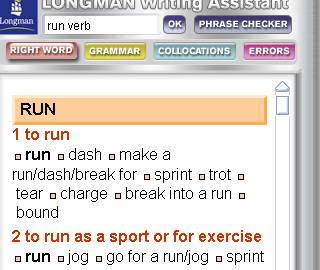
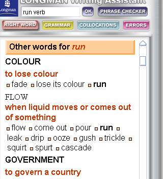
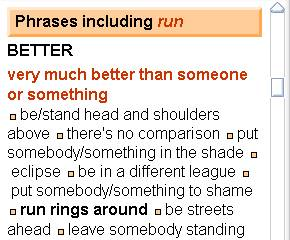
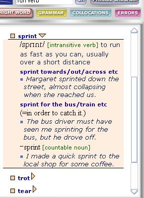

Choose the right word
The Right Word screen shows other words or phrases that have similar meanings to your chosen word or phrase. The top section shows the most commonly used meaning of your word (when your word appears as a keyword in the Activator). Scroll through the other sections to make sure you have the right meaning for what you are writing.

The ‘Other words for’ section shows similar words for run when run has a less common meaning, for example, ‘to lose colour’ or ‘when liquid moves or comes out of something’.

The ‘Phrases including run’ section shows phrases in which run is one of the words, for example, run rings around.

You can click on any word or phrase to open its entry. There is usage information and example sentences to help you decide if you do have the right word.
Compare the usage of other words within the screen to see if they might be more appropriate for what you are writing. Use the arrows to open and close the entries.

Introduction to the Longman Writing Assistant
Reduce the size of the Longman Writing Assistant
Switching between Writing Assistant and main dictionary mode